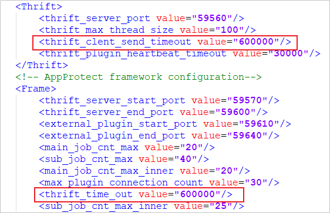

对FusionOne Compute生产环境执行资源扫描任务（包括资源接入后的自动触发、手动触发、周期性触发），在生产环境虚拟机数量较大（X千台量级）情况下，扫描任务超时失败，或者扫描结果有相对延迟（扫描结果为上一次触发的扫描结果）。
虚拟机数量较大，FusionOne Compute资源扫描可能超时。
change container_application view pod_name=gaussdb-0 namespace=dpa container_name=gaussdb
sudo /opt/script/gauss_operation.sh "enter_sql" "PROTECT_MANAGER"
[GaussOp@gaussdb-0 gaussdb]$ sudo /opt/script/gauss_operation.sh "enter_sql" "PROTECT_MANAGER"
% Total % Received % Xferd Average Speed Time Time Time Current
Dload Upload Total Spent Left Speed
100 19170 0 19170 0 0 780k 0 --:--:-- --:--:-- --:--:-- 748k
[2022-09-26 09:17:25][INFO][login database: protect_manager.][GaussDB][55][enter_database]
gsql (9.2.4)
SSL connection (cipher: ECDHE-RSA-AES256-GCM-SHA384, bits: 256)
Type "help" for help.
PROTECT_MANAGER=#
update t_config set VALUE='超时时间' where KEY='agent_default_feign_readTimeOut';
update t_config set VALUE='600' where KEY='agent_default_feign_readTimeOut';
以客户端安装目录为“/opt”为例：
vi /opt/DataBackup/ProtectClient/ProtectClient-E/conf/agent_cfg.xml
在“agent_cfg.xml”中修改thrift_clent_send_timeout和thrift_time_out参数的值为600000。
